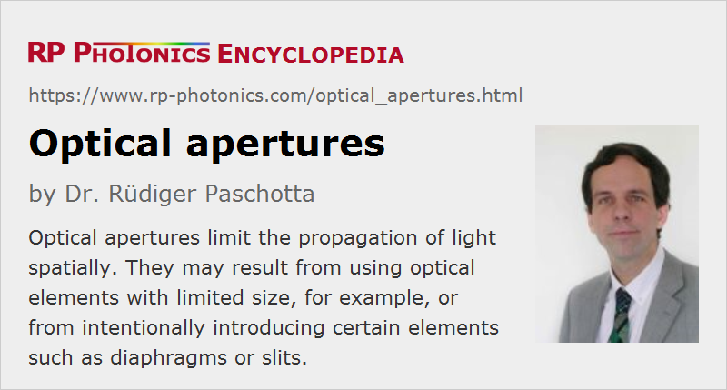

Optical Apertures
Definition: structures which limit the propagation of light
Alternative terms: stop, aperture stop
German: optische Aperturen
How to cite the article; suggest additional literature
Author: Dr. Rüdiger Paschotta
Optical apertures are structures which spatially limit the propagation of light. Same examples:
- The entrance aperture of a photographic objective or a telescope, for example, lets light enter only over a limited area and a limited angular range. Light propagation may be further restricted by internal limitations.
- Within an optical system, there may be optical components of limited size, such as mirrors and lenses with a certain diameter. Light outside that diameter can usually not get through the system.
- Various kinds of light sources have some limited output aperture, where usable light can emerge.
- One often intentionally uses so-called diaphragms or pinholes, i.e., structures with a hole, which allow light to propagate only through that opening. Outside that opening, there is often a material with a black coating which absorbs most incident light.
- There are other kinds of introduced optical apertures with different geometrical shapes of the opening. Most frequently, one uses optical slits of various widths and lengths.
Effects of Optical Apertures
Optical apertures can have various helpful or detrimental effects on the performance of optical instruments. Some examples:
- When truncating laser beams, for example, hard apertures can cause features like diffraction rings and thus reduce the beam quality. See the article on diffraction for more details.
- Apertures also often limit the light throughput, for example to an image sensor, and need to be compensated with an increased exposure time. An aperture with that effect is called an aperture stop. It can also cause images to be vignetted, which means that the brightness is reduced more in the peripheral regions of the image.
- The entrance aperture of an optical telescope or photographic objective, for example, limits the achievable angular resolution through the effect of diffraction.
- In some situations, the image quality is increased by an optical aperture (e.g. a diaphragm in a photographic objective). For example, it may prevent light from propagating throughout the regions of a lens, where spherical aberrations would be excessive. Also, it may avoid light propagation with extreme angular directions. In other cases, it increases the depth of field and therefore the image quality, if objects in different distances are imaged simultaneously. See the article on imaging with a lens for more details.
- Apertures can also limit the field of view of an optical instrument. They are then called field stops. The field of view is not always sharply limited; there may be some vignetting.
- In a laser, an optical aperture, e.g. in the form of the limited size of the laser crystal, may limit the area over which laser radiation is generated. In some cases, an intracavity aperture suppresses laser operation on higher-order resonator modes and thus improves the laser beam quality.
Not all apertures in an optical system have an impact on the performance. It often happens that the finite size of an optical element is not relevant, since light can anyway not reach its outer regions due to the optical design.
Applications of Apertures
Apertures of different kinds are used in many optical instruments. Some examples:
- Small pinholes are often used for producing light with increased spatial coherence. For example, there are mode cleaners with a pinhole between two lenses.
- At the entrance and exit of a monochromator, e.g. of Czerny–Turner type, there is usually a narrow slit. It prevents the propagation of light on paths which would be possible for light outside the wanted range of transmission wavelengths.
- As mentioned above, photographic objectives (as well as other types of objectives) often contain one or more apertures.
- Hard or soft apertures can be used for Kerr lens mode locking of lasers.
Apertures Sizes
The term aperture is sometimes used for the size of an aperture rather than the object itself. Often, one specifies the diameter, or in case of objectives the f-number (where larger values indicate smaller aperture diameters).
Hard and Soft Apertures
Most optical apertures are hard apertures, which means that at any location they are either fully transmissive or fully block light. However, there are also soft apertures, exhibiting a gradual spatial variation of transmissivity – realized with special dielectric coatings, for example. More specifically, there are Gaussian apertures where the transmissivity profile is described by a Gaussian function.
Soft apertures can help to avoid or mitigate effects of diffraction.
Limited Aperture Sizes of Optical Devices and Photonic Components
For some optical instruments, in particular for telescopes with large magnification, very large input aperture sizes are desirable for obtaining maximum image resolution, which is limited by diffraction at the aperture. It is challenging to produce the required high precision mirrors and lenses, for example, since the surface shape should deviate by substantially less than one optical wavelength over the whole area. Effects of bending, e.g. due to the considerable weight of such components, also need to be considered.
Laser technology usually works with fairly limited aperture sizes. For example, the intracavity beam radius in a laser is rarely larger than a few millimeters. Therefore, laser mirrors and other intracavity components usually do not have to be particularly large. However, some special components used in laser technology are available only with quite limited aperture sizes, which sometimes cause limitations all require compromises:
- Periodically poled nonlinear crystals offer interesting options for nonlinear frequency conversion, but the poling process works well only with crystals of quite limited thickness. Therefore, one can operate such crystals only with quite limited beam areas.
- Even without the requirement for periodic poling, the available sizes of most laser crystal and nonlinear crystals are quite limited, which is sometimes a problem for devices operating at very high power levels.
- Various types of optical modulators, Faraday isolators and volume Bragg gratings, for example, are also often quite limited in size, or become substantially more expensive for larger aperture sizes.
Large Apertures for High-power Devices
In many cases, devices with larger apertures are required for devices operating at higher power levels. Some examples:
- Lasers need to be operated with optical intensity levels which are more or less dictated by spectroscopic properties of the gain medium. Therefore, higher powers imply larger beam areas.
- High-power lasers often have lower beam quality, so that the beam radius is to be increased in order to maintain a sufficiently large effective Rayleigh length.
- In some cases, beam areas need to be increased in order to mitigate thermal effects.
- Larger beam areas can also be necessary in order to limit effects of nonlinearities due to high optical intensities. Devices for nonlinear frequency conversion require certain intensity levels to be efficient. However, excessive intensities should nevertheless be avoided.
Suppliers
The RP Photonics Buyer's Guide contains 15 suppliers for optical apertures. Among them:
Questions and Comments from Users
Here you can submit questions and comments. As far as they get accepted by the author, they will appear above this paragraph together with the author’s answer. The author will decide on acceptance based on certain criteria. Essentially, the issue must be of sufficiently broad interest.
Please do not enter personal data here; we would otherwise delete it soon. (See also our privacy declaration.) If you wish to receive personal feedback or consultancy from the author, please contact him e.g. via e-mail.
By submitting the information, you give your consent to the potential publication of your inputs on our website according to our rules. (If you later retract your consent, we will delete those inputs.) As your inputs are first reviewed by the author, they may be published with some delay.
See also: diaphragms, numerical aperture, diffraction, imaging with a lens, f-number, Fresnel number, vignetting
|  |
If you like this page, please share the link with your friends and colleagues, e.g. via social media:
These sharing buttons are implemented in a privacy-friendly way!